Vorstandswahl und Kreisersatzdelegierter
Am 21. November wurde ich mit 28 Stimmen (72 %) zum Beisitzer und mit elf Stimmen zum Kreisersatzdelegierten gewählt. Auf Seite 2 wird das Vorstandsfoto mit meinem Namen veröffentlicht.
Diese elf Ausgaben der Mitgliederzeitung der SPD Lohbrügge erwähnen mich namentlich. Sie dokumentieren meinen Weg im Distriktsvorstand, meine Delegiertenfunktionen, die Kandidatenaufstellungen und meine Zeit als Bezirksabgeordneter.
Jede Ausgabe ist einmal aufgeführt. Die vollständigen PDFs lassen sich lesen und herunterladen; bei jedem Eintrag steht die Fundstelle.
Am 21. November wurde ich mit 28 Stimmen (72 %) zum Beisitzer und mit elf Stimmen zum Kreisersatzdelegierten gewählt. Auf Seite 2 wird das Vorstandsfoto mit meinem Namen veröffentlicht.
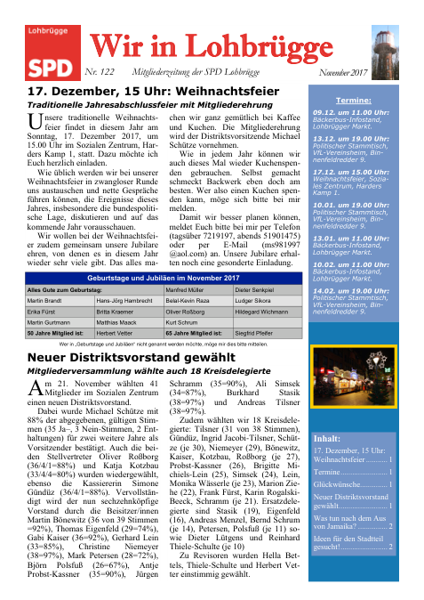
Am 17. Januar 2019 wurde ich auf Platz 6 im Wahlkreis Lohbrügge-Nord aufgestellt: neun Ja-Stimmen, eine Nein-Stimme und fünf Enthaltungen.
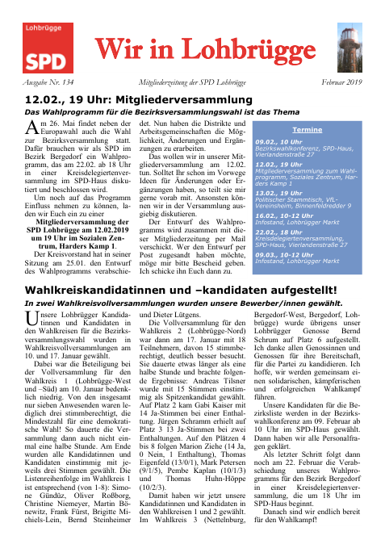
Der Bericht über die Bezirkswahlkonferenz am 9. Februar 2019 nennt meinen Bezirkslistenplatz 37.
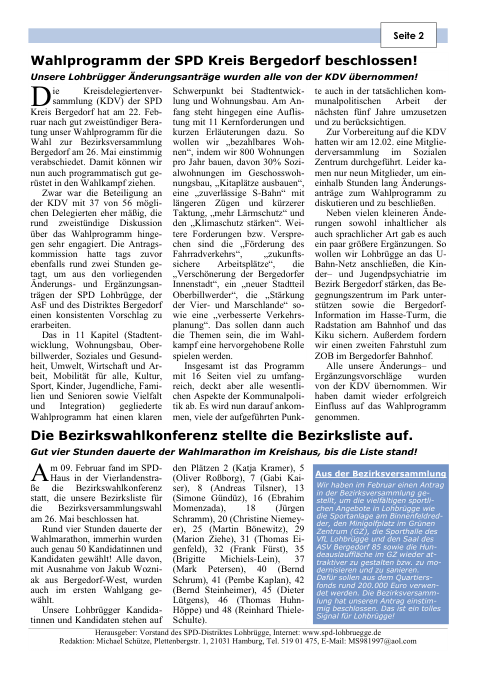
Die Wahlnachlese nennt mich unter den vier gewählten Lohbrügger Abgeordneten. Der Ergebnisbericht beschreibt mich als neu gewählten Abgeordneten im Wahlkreis Lohbrügge-Nord.
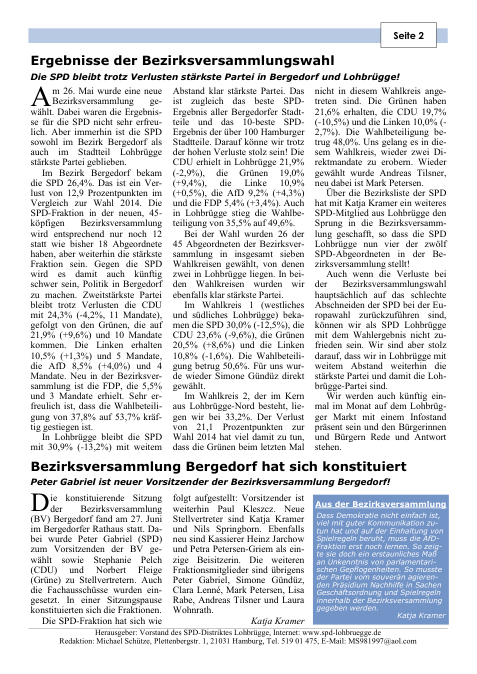
Ich werde als Beisitzer aufgeführt, der erneut kandidieren möchte. Daneben berichtet die Ausgabe über Billebad und Fahrradbügel, ohne die einzelnen Beteiligten dieser Anträge zu nennen.
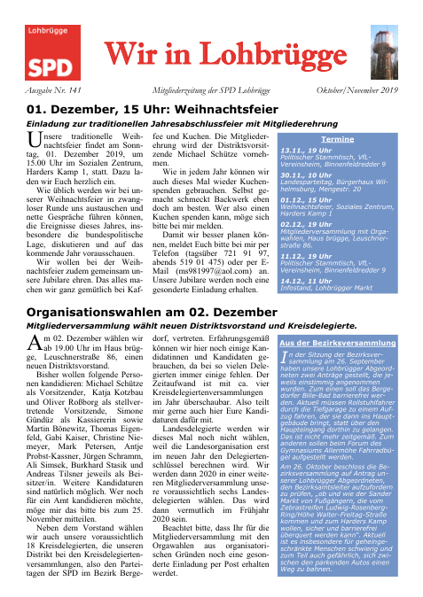
Am 2. Dezember 2019 wurde ich mit 18 Stimmen erneut Beisitzer und mit sechs Stimmen Kreisersatzdelegierter. Die Bildunterschrift nennt mich unter den Vorstandsmitgliedern, die auf dem Gruppenfoto fehlen.
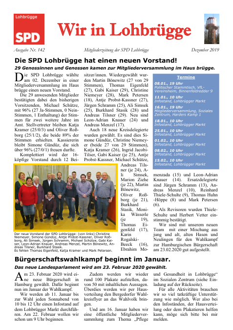
Der Distrikt schlug mich neben vier weiteren Personen für den Kreisvorstand vor. Der Bericht belegt den Vorschlag, nicht eine anschließende Wahl.
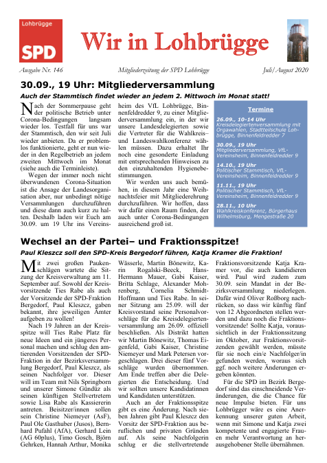
Am 30. September 2020 wurde ich mit 14 Stimmen als einer von acht Vertretern für die Wahlkreiskonferenz zur Aufstellung des Bundestagskandidaten gewählt. Seite 1 dokumentiert außerdem die Einschränkungen der Bezirksversammlung während Corona.
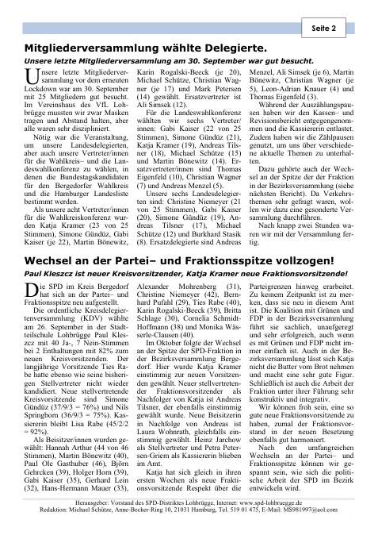
Im Bericht über ihre Wahl am 26. August 2021 bin ich auf einem Gruppenfoto zu sehen und werde in der Bildunterschrift ausdrücklich als Lohbrügger Abgeordneter genannt. Ein genauer Aufnahmetag steht nicht dabei.
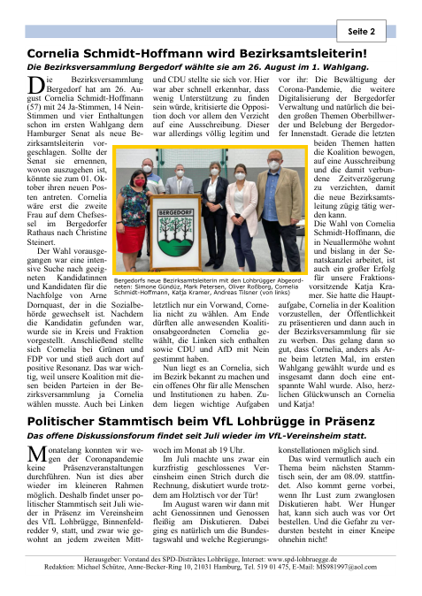
Am 2. Dezember 2023 wurde ich auf Bezirkslistenplatz 24 aufgestellt. Die Zeitung nennt 26 Ja-Stimmen, 16 Nein-Stimmen und fünf Enthaltungen (55,3 %). Das sind interne Aufstellungsstimmen, keine Personenstimmen der öffentlichen Wahl.
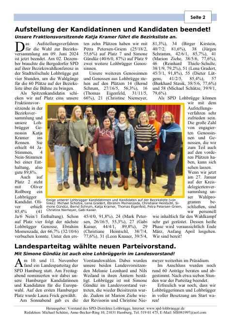
Die Wahl vom 8. April 2024 führt mich erneut als Kreisersatzdelegierten auf. In der vollständigen Liste des neu gewählten Distriktsvorstands bin ich nicht mehr enthalten.
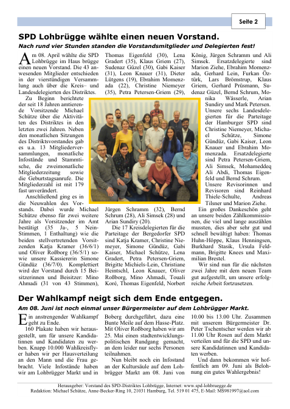
Der Onlinebericht der SPD Lohbrügge „Mitgliederversammlung wählte neuen Vorstand!“ vom 4. Juni 2022 nennt mich als gewählten Beisitzer, Kreisersatzdelegierten und Landesersatzdelegierten. Dies ist ein ergänzender Website-Bericht, keine zusätzliche Mitgliederzeitung.
Diese Ausgaben ergänzen die Geschichte der politischen Arbeit während der Pandemie. Sie sind gesondert aufgeführt, weil die jeweiligen Berichte mich nicht namentlich erwähnen.